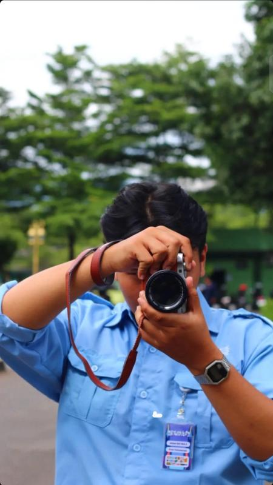

Halo, Saya Ahmad Refi Widi Katibin
Saya seorang |
Developer yang berfokus pada pengembangan frontend & backend (Full-Stack). Suka menulis kode yang bersih, efisien, dan skalabel dengan HTML/CSS, Python, dan JavaScript.
class Developer:
def __init__(self):
self.name = "Ahmad Refi Widi Katibin"
self.focus = ["Frontend", "Backend"]
self.languages = ["HTML", "CSS", "Python"]
self.passionate = True
def build_web(self):
print("Building Full-Stack apps!")
refi = Developer()
refi.build_web()01. Tentang Saya
Saya adalah seorang pengembang perangkat lunak yang berdedikasi dan berbasis di Indonesia. Saya sangat tertarik dalam menjelajahi arsitektur backend, pemrograman konkurensi, dan otomatisasi menggunakan teknologi modern.
Selama perjalanan saya di dunia pemrograman, saya telah mengembangkan berbagai macam aplikasi mulai dari sistem manajemen terdistribusi, integrasi bot otomatisasi untuk WhatsApp, hingga penerapan aplikasi berbasis cloud di platform PaaS. Saya selalu berusaha untuk mempelajari hal baru guna mengoptimalkan kinerja aplikasi yang saya kembangkan.
- Kota: Bandung, Jawa Barat
- Fokus: Frontend & Backend (Full-Stack)
- GitHub: ahmdrfiwk1911
- LinkedIn: ahmdrfiwk

02. Keahlian & Teknologi
Berikut adalah beberapa teknologi dan alat yang sering saya gunakan dalam proyek saya:
Bahasa Pemrograman
- HTML5 & CSS3
- Python
- JavaScript (ES6+)
- Go (Golang)
- SQL
Framework & Runtime
- Node.js
- Gin / Fiber (Go)
- Express.js
- RESTful API
Cloud & Tools
- MySQL
- InfluxDB
- Docker
- GitHub
- Visual Studio Code
- Apache NetBeans
03. Pengalaman
Internet of Things Intern
PT. Hariff Daya Tunggal Engineering (Internship)
Fokus pada riset dan implementasi teknologi IoT, perancangan sirkuit perangkat keras (*embedded systems*), integrasi mikrokontroler, serta pengembangan sistem pemantauan data sensor secara real-time.
Head of Department External
Perhimpunan Mahasiswa Bandung Telkom University (Contract)
Memimpin departemen hubungan luar, menjalin kemitraan eksternal strategis, menyelenggarakan kegiatan komunikasi publik, serta memperkuat kolaborasi dan jejaring eksternal organisasi.
Logistics Staff
PERFECT - Permib Freedom in Creativity (Seasonal)
Bertanggung jawab atas pengadaan, distribusi, manajemen perlengkapan teknis, serta koordinasi teknis operasional guna mendukung kelancaran pelaksanaan festival PERFECT.
Publication and Documentations Staff
From 2 With Love 2023: Artwovesa (Seasonal)
Mendokumentasikan pertunjukan musik live panggung di Bandung, Jawa Barat. Bertanggung jawab atas dokumentasi visual, pengaturan pencahayaan kamera, komposisi, serta pasca-pemrosesan foto konser untuk media sosial acara.
04. Proyek Unggulan
Wind Turbine Monitoring Dashboard
Sistem dashboard Grafana real-time untuk memantau performa turbin angin dan sistem daya surya (hybrid). Melacak metrik kecepatan angin, tegangan sistem, daya pengisian baterai, serta suhu operasional menggunakan InfluxDB sebagai time-series database.
- Grafana
- InfluxDB
- IoT Monitoring
- Wind Turbine
Solar System Monitoring Dashboard
Sistem dashboard monitoring real-time untuk pembangkit listrik tenaga surya (hybrid). Memantau metrik daily solar production, tegangan baterai, input daya PV (Photo-Voltaic), backup grid power (PLN), serta status kesehatan baterai (SOC & SOH).
- Grafana
- InfluxDB
- IoT Monitoring
- Solar Energy
Photografer at F2WL ARTWOVESA - Yura Yunita
Hasil dokumentasi panggung acara live musik. Mengambil momen emosional Yura Yunita di bawah pencahayaan panggung dramatis dengan fokus tajam dan warna kontras tinggi.
- Concert
- Lighting
- Stage Photography
05. Hubungi Saya
Saya selalu terbuka untuk berdiskusi tentang proyek baru, kolaborasi open-source, atau sekadar berbagi pengetahuan mengenai web development. Silakan tinggalkan pesan!
Lokasi
Bandung, Jawa Barat, Indonesia